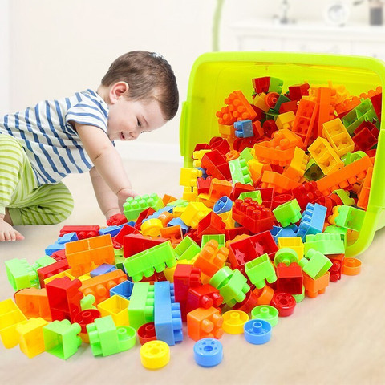

Toys Hub is your one-stop destination for fun, learning, and creativity. We offer a wide range of high-quality toys designed to inspire imagination, support child development, and bring joy to kids of all ages toys are important tools that help children learn, grow, and have fun. They encourage creativity, improve motor and thinking skills, and support social development through play. Age-appropriate toys also help children explore their imagination while building confidence and happiness


Whether you’re shopping for toddlers, preschoolers, or growing kids, our collection is organized by age to make finding the right toy easy and enjoyable.At Toys Hub, we believe play is the foundation of learning. Explore our collection and give your child toys that spark curiosity, creativity, and happiness.
From educational and STEM toys to dolls, action figures, puzzles, and outdoor play essentials — enjoy special price drops across a wide range of products
Here are a few items “Price Drop” Here are a few items “Bigest Price Drop”(open to next tab)